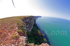
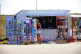
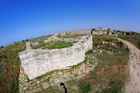
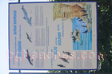
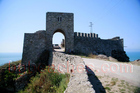
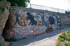
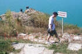
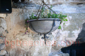

Kaliakra Beach Guide
About Kaliakra
Kaliakra is a destination along Bulgaria's beautiful Black Sea coast. This destination features Sandy beach, Bulgarian coastal atmosphere, summer facilities, making it ideal for beach lovers, families, travelers seeking authentic Bulgarian coast. The Bulgarian Black Sea coast offers 378 kilometers of diverse beaches, and Kaliakra provides its own unique character and attractions.
What to Expect
The beach area at Kaliakra features fine to medium sand typical of Black Sea beaches. During summer months (June-September), water temperatures range from 22-25°C (72-77°F), perfect for swimming. The area offers standard beach amenities including umbrella and sunbed rentals (typically 10-20 BGN per day), changing facilities, and food services. Peak season runs from mid-July through mid-August, when the beaches are busiest and prices highest.
Getting There & Practical Information
The nearest airports are Burgas (BOJ) and Varna (VAR), both serving international and domestic flights. Bus services connect major coastal towns during summer. Accommodation ranges from budget guesthouses (40-60 BGN/night) to mid-range hotels (80-150 BGN/night). Bulgaria uses the Bulgarian Lev (BGN), approximately 2 BGN = 1 EUR. English is commonly spoken in tourist areas.
Nearby Attractions
Beyond the beach, visitors can explore other Black Sea destinations, local attractions. The Bulgarian coast combines natural beauty with historical sites, traditional villages, and opportunities for hiking, water sports, and cultural experiences. Each location offers something unique while maintaining authentic Bulgarian coastal character.
Best Time to Visit
June and September offer excellent weather with fewer crowds and better prices compared to peak July-August. Water is warm enough for comfortable swimming from mid-June through mid-September. For the quietest experience and best value, consider late May or early October, though some facilities may have reduced hours.
Tips for Visitors
Bring high SPF sunscreen (30+) as the sun is strong. Many beach vendors prefer cash. Learning a few Bulgarian phrases is appreciated. Book accommodations in advance for July-August. Consider renting a car to explore multiple beaches. Try local restaurants for authentic Bulgarian cuisine and fresh Black Sea fish. Beach umbrellas and sunbeds are available but bringing your own gear saves money.
Photo Gallery
Browse our collection of photos from Kaliakra showing the beach, facilities, and atmosphere. These authentic images help you understand what to expect and plan your visit effectively.
Fort
Road to the sea- 
Snakes
Obelisk
Monument- 
Oriental
Tapestry- 
Church remains
Hardly Accessible- 
Shag and Dolphins - 
Forbidden for cars
Inside the fort
Wind Turbines
Shore
Pavement
Holes in rocks- 
Wall
Museum
Model
The model from above- 
Tourist
Well maintained
Military base
Chapel
End
Don't Jump- 
Small details
The other end
Tourists